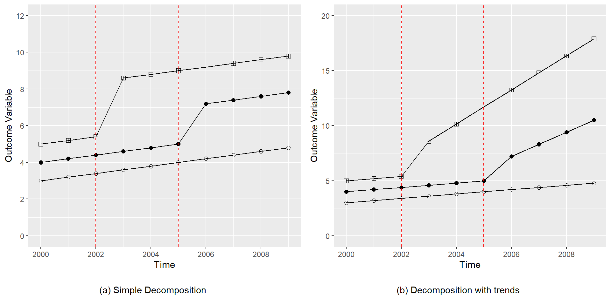
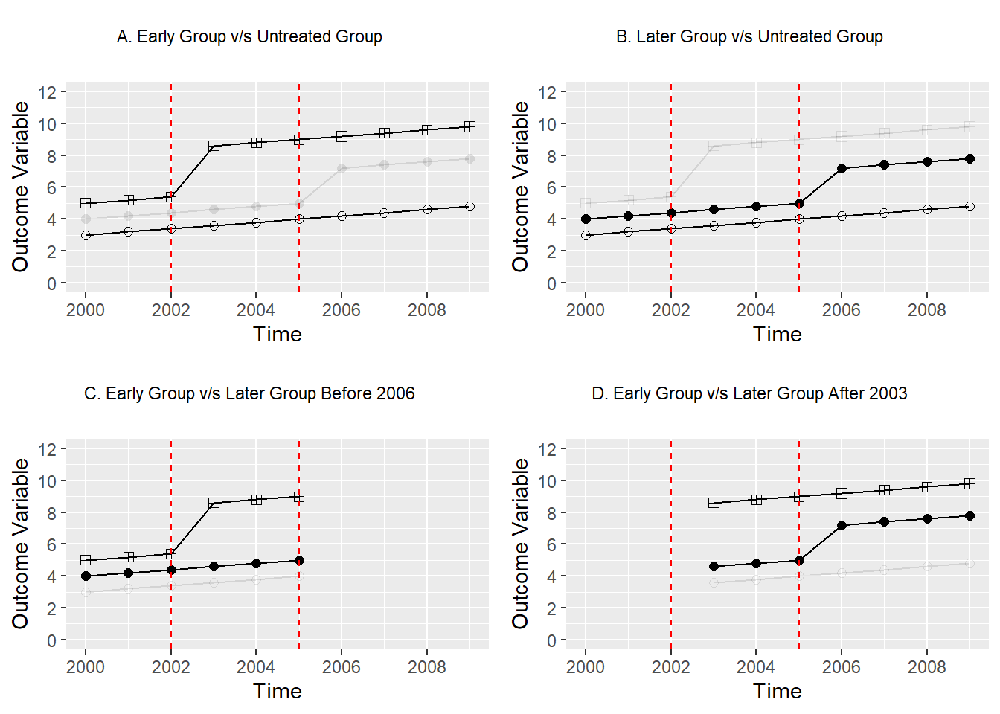

Details required for Chapter 4
Here will be the Chapter 4 excersises and examples.
Two-Way Fixed Effects Models - Numerical Example
In this sections we show you two numerical examples of the two methodologies seen in section 4.2.2 of the book. The goal is to estimate the treatment effect \(\tau\) in the next “two-way fixed effects” model \[y_{st} = \gamma_s + \lambda_t + \tau w_{st} + \varepsilon_{st}\] Where \(y_{st}\) is the outcome variable, \(\gamma_s\) and \(\lambda_t\) are state (unit) and time fixed effects, \(w_{st}\) is the binary treatment variable that takes the value of 1 if a state (unit) \(s\) is treated at time \(t\) and otherwise takes 0. Precisely we focus on Goodman-Bacon (2021) and Chaisemartin and D’Haultfoeuille (2020) methodologies.
The results from Goodman-Bacon (2021) and those from Chaisemartin and D’Haultfoeuille (2020) are similar, however they take quite different paths to get there. Goodman-Bacon’s (like that laid out in Athey and Imbens (2022)) is “mechanical” in that it is based on the underlying difference-in-differences comparisons. The result in Chaisemartin and D’Haultfoeuille (2020) is based on a potential outcomes frame-work and a series of assumptions underlying the regression. Thus to examine how these methods work requires somewhat different frameworks. In the case of Goodman-Bacon (2021), we should consider all possible DD comparisons, while in the case of Chaisemartin and D’Haultfoeuille (2020) we should consider each unit’s ATE, which requires knowing the observed and counterfactual state. To examine this in a more applied way, let’s consider a constructed example.
Consider a panel of 3 states/areas over the 10 years (\(t\)) of 2000 to 2009. One of these units is entirely untreated (\(unit = 1\) or group \(U\)), one is treated at an early time period 2003 (\(unit = 2\) or group \(k\)), and the other is treated at a later time period 2006 (\(unit = 3\) or group \(l\))
Data <- data.frame(unit = ceiling(1:30/10), year = rep(2000:2009, 3))We will consider a simple-case where the actual data-generating process is known as: \[y_{unit,t} = 2 + 0.2 \times (t - 2000) + 1 \times unit + \beta_1 \times post \times unit + \beta_2 \times post \times unit \times (t - treat)\] In this mode \(unit\) refers to the unit number listed above (1, 2 or 3), \(post\) indicates that a unit is receiving treatment in the relevant time period \(t\), and \(treat\) refers to the treatment period (2003 for unit 2, and 2006 for unit 3).
Data$treat <- ifelse(Data$unit == 2, 2006, ifelse(Data$unit == 3, 2003, 0))
Data$time <- ifelse(Data$treat == 0, 0, Data$year - Data$treat)
Data$post <- ifelse(Data$time >= 0 & Data$treat != 0, 1, 0)This specification allows for each unit to have its own fixed effect, given that \(unit\) is multiplied by 1, and allows for a general time trend increasing by 0.2 units each period across the whole sample. The impact of treatment comes from the units \(\beta_1\) and \(\beta_2\). The first of these, \(\beta_1\), captures an immediate unit-specific jump when treatment is implemented which remains stable over time. The second of these, \(\beta_2\), implies a trend break occurring only for the treated units once treatment comes into place. We will consider 2 cases below. In one case \(\beta_1 = 1\) and \(\beta_2 = 0\) (a simple case with a constant treatment effect per unit)
Data$y1 <- 2 + (Data$year - 2000) * 0.2 + 1 * Data$unit + 1 * Data$post * Data$unit +
0 * Data$post * Data$unit * (Data$time)And in a second case \(\beta_1 = 1\) and \(\beta_2 = 0.45\) (a more complex case in which there are heterogeneous treatment effects over time).
Data$y2 <- 2 + (Data$year - 2000) * 0.2 + 1 * Data$unit + 1 * Data$post * Data$unit +
0.45 * Data$post * Data$unit * (Data$time)These two cases are plotted next where the line with empty circles refers to group \(U\), the line with black filled circles refers to group \(k\) and the line with squares refers to group \(l\)
Show the plot code
library(ggplot2)
library(ggpubr)
p1 <- ggplot(data = Data, aes(x = year, y = y1, color = as.factor(unit))) +
geom_line(linetype = 1, size = 0.5) +
geom_point(aes(shape = as.factor(unit)), size = 2) +
scale_shape_manual(values = c(1, 16, 12)) +
scale_color_manual(values = c("black", "black", "black")) +
labs(x = "Time", y = "Outcome Variable") +
scale_x_continuous(breaks = seq(from = 2000, to = 2009, by = 2)) +
scale_y_continuous(breaks = seq(from = 0, to = 12, by = 2),
labels = seq(from = 0, to = 12, by = 2),
limits = c(0,12)) +
geom_vline(xintercept = 2002, color = "red", linetype = 2) +
geom_vline(xintercept = 2005, color = "red", linetype = 2) +
theme(legend.position = "none")
t1 <- ggplot() + geom_text(aes(x = 0, y = 0, label = "(a) Simple Decomposition")) +
theme_void()
p2 <- ggplot(data = Data, aes(x = year, y = y2, color = as.factor(unit))) +
geom_line(linetype = 1, size = 0.5) +
geom_point(aes(shape = as.factor(unit)), size = 2) +
scale_shape_manual(values = c(1, 16, 12)) +
scale_color_manual(values = c("black", "black", "black")) +
labs(x = "Time", y = "Outcome Variable") +
scale_x_continuous(breaks = seq(from = 2000, to = 2009, by = 2)) +
scale_y_continuous(breaks = seq(from = 0, to = 20, by = 5),
labels = seq(from = 0, to = 20, by = 5),
limits = c(0,20)) +
geom_vline(xintercept = 2002, color = "red", linetype = 2) +
geom_vline(xintercept = 2005, color = "red", linetype = 2) +
theme(legend.position = "none")
t2 <- ggplot() + geom_text(aes(x = 0, y = 0, label = "(b) Decomposition with trends")) +
theme_void()
ggarrange(plotlist = list(p1, p2, t1, t2), ncol = 2, nrow = 2, heights = c(0.9, 0.1))
Goodman-Bacon (2021) Decomposition
Now we follow the Goodman-Bacon (2021) decomposition for each case:
- (a) Simple Decomposition
- (b) Decomposition with trends
This methodology basically calculate all \(2 \times 2\) combinations of states and time in order to get (in this example) four specific effects and obtain \(\widehat{\tau}\) as a weighted mean. The specific effects results are:
- A. \(\widehat{\beta}^{2\times2}_{kU}\) from the comparison of the early treated unit with the untreated unit.
- B. \(\widehat{\beta}^{2\times2}_{lU}\), from the comparison of the latter treated unit with the untreated unit.
- C. \(\widehat{\beta}^{2\times2,k}_{kl}\), from the comparison of the early and latter treated units, when the early unit begin to be treated.
- D. \(\widehat{\beta}^{2\times2,l}_{kl}\), from the comparison of the early and latter treated units, when the latter unit begin to be treated.
Basically weights in a mean all the possible DD comparisons resulting from the analysis.
(a) Simple Decomposition
In this case the Goodman-Bacon (2021) methodology estimate \(\widehat{\tau}\) weighting the next four DD comparisons
Show the plot code
library(dplyr)
p1 <- ggplot(data = Data, aes(x = year, y = y1, color = as.factor(unit))) +
geom_line(linetype = 1, size = 0.5, aes(alpha = as.factor(unit))) +
geom_point(aes(shape = as.factor(unit), alpha = as.factor(unit)), size = 2) +
scale_alpha_manual(values = c(1,0.1,1)) +
scale_shape_manual(values = c(1, 16, 12)) +
scale_color_manual(values = c("black", "black", "black")) +
labs(x = "Time", y = "Outcome Variable") +
scale_x_continuous(breaks = seq(from = 2000, to = 2009, by = 2)) +
scale_y_continuous(breaks = seq(from = 0, to = 12, by = 2),
labels = seq(from = 0, to = 12, by = 2),
limits = c(0,12)) +
geom_vline(xintercept = 2002, color = "red", linetype = 2) +
geom_vline(xintercept = 2005, color = "red", linetype = 2) +
theme(legend.position = "none")
p2 <- ggplot(data = Data, aes(x = year, y = y1, color = as.factor(unit))) +
geom_line(linetype = 1, size = 0.5, aes(alpha = as.factor(unit))) +
geom_point(aes(shape = as.factor(unit), alpha = as.factor(unit)), size = 2) +
scale_alpha_manual(values = c(1,1,0.1)) +
scale_shape_manual(values = c(1, 16, 12)) +
scale_color_manual(values = c("black", "black", "black")) +
labs(x = "Time", y = "Outcome Variable") +
scale_x_continuous(breaks = seq(from = 2000, to = 2009, by = 2)) +
scale_y_continuous(breaks = seq(from = 0, to = 12, by = 2),
labels = seq(from = 0, to = 12, by = 2),
limits = c(0,12)) +
geom_vline(xintercept = 2002, color = "red", linetype = 2) +
geom_vline(xintercept = 2005, color = "red", linetype = 2) +
theme(legend.position = "none")
p3 <- Data %>% filter(year < 2006) %>%
ggplot(aes(x = year, y = y1, color = as.factor(unit))) +
geom_line(linetype = 1, size = 0.5, aes(alpha = as.factor(unit))) +
geom_point(aes(shape = as.factor(unit), alpha = as.factor(unit)), size = 2) +
scale_alpha_manual(values = c(0.1,1,1)) +
scale_shape_manual(values = c(1, 16, 12)) +
scale_color_manual(values = c("black", "black", "black")) +
labs(x = "Time", y = "Outcome Variable") +
scale_x_continuous(breaks = seq(from = 2000, to = 2009, by = 2),
limits = c(2000,2009)) +
scale_y_continuous(breaks = seq(from = 0, to = 12, by = 2),
labels = seq(from = 0, to = 12, by = 2),
limits = c(0,12)) +
geom_vline(xintercept = 2002, color = "red", linetype = 2) +
geom_vline(xintercept = 2005, color = "red", linetype = 2) +
theme(legend.position = "none")
p4 <- Data %>% filter(year >= 2003) %>%
ggplot(aes(x = year, y = y1, color = as.factor(unit))) +
geom_line(linetype = 1, size = 0.5, aes(alpha = as.factor(unit))) +
geom_point(aes(shape = as.factor(unit), alpha = as.factor(unit)), size = 2) +
scale_alpha_manual(values = c(0.1,1,1)) +
scale_shape_manual(values = c(1, 16, 12)) +
scale_color_manual(values = c("black", "black", "black")) +
labs(x = "Time", y = "Outcome Variable") +
scale_x_continuous(breaks = seq(from = 2000, to = 2009, by = 2),
limits = c(2000,2009)) +
scale_y_continuous(breaks = seq(from = 0, to = 12, by = 2),
labels = seq(from = 0, to = 12, by = 2),
limits = c(0,12)) +
geom_vline(xintercept = 2002, color = "red", linetype = 2) +
geom_vline(xintercept = 2005, color = "red", linetype = 2) +
theme(legend.position = "none")
t1 <- ggplot() +
geom_text(aes(x = 0, y = 0, label = "A. Early Group v/s Untreated Group"), size = 3) +
theme_void()
t2 <- ggplot() +
geom_text(aes(x = 0, y = 0, label = "B. Later Group v/s Untreated Group"), size = 3) +
theme_void()
t3 <- ggplot() +
geom_text(aes(x = 0, y = 0, label = "C. Early Group v/s Later Group Before 2006"),
size = 3) +
theme_void()
t4 <- ggplot() +
geom_text(aes(x = 0, y = 0, label = "D. Early Group v/s Later Group After 2003"),
size = 3) +
theme_void()
ggarrange(plotlist = list(t1, t2, p1, p2, t3, t4, p3, p4), ncol = 2, nrow = 4,
heights = c(0.1, 0.4, 0.1, 0.4))
As seen in the plots, in the simple decomposition these effects are constants of 3 and 2 for early and later treated units given that the “treatment effect” is simply \(1 \times unit\) in each case.
A. Early Group v/s Untreated Group
In order to calculate the effects we start making the simple DD comparison of the untreated group \(U\) (\(unit = 1\)) with the early treated group \(k\) (\(unit = 3\)) getting \(\widehat{\beta}^{2 \times 2}_{kU}\) as \[\widehat{\beta}^{2 \times 2}_{kU} = \left( \overline{y}_k^{Post(k)} - \overline{y}_k^{Pre(k)} \right) - \left( \overline{y}_U^{Post(k)} - \overline{y}_U^{Pre(k)} \right)\] Where \(\overline{y}_k^{Post(k)}\) is the mean of the outcome variable for the early treated group \(k\) (\(unit = 3\)) posterior to treatment, from 2003, \(\overline{y}_k^{Pre(k)}\) is the mean for of the outcome variable for the early treated group \(U\) (\(unit = 3\)) previous to treatment, until 2002, and \(\overline{y}_U^{Post(k)}, \overline{y}_U^{Post(k)}\) are the analogous for the untreated group \(U\) (\(unit = 1\))
(mean(Data$y1[Data$unit == 3 & Data$post == 1]) -
mean(Data$y1[Data$unit == 3 & Data$post == 0])) -
(mean(Data$y1[Data$unit == 1 & Data$year >= 2003]) -
mean(Data$y1[Data$unit == 1 & Data$year < 2003]))[1] 3This result also can be obtained from the next linear regression with the canonical DD formula \[y_{unit,t} = \alpha_0 + \alpha_1 \times Post(k) + \alpha_2 \times \mathbf{1}(unit = 3) + \beta_{kU}^{2\times2} \times Post(k) \times \mathbf{1}(unit = 3) + \varepsilon_i\] Where \(Post(k)\) indicates that the year is equal or greater than the year where the group \(k\) (\(unit = 3\)) received the treatment (2003) and \(\mathbf{1}(unit = 3)\) indicates if the observation is from the early treated group \(k\) (\(unit = 3\))
summary(lm(y1 ~ factor(year >= 2003) + factor(unit) + factor(year >= 2003):factor(unit),
data = Data, subset = (unit != 2)))
Call:
lm(formula = y1 ~ factor(year >= 2003) + factor(unit) + factor(year >=
2003):factor(unit), data = Data, subset = (unit != 2))
Residuals:
Min 1Q Median 3Q Max
-0.6 -0.2 0.0 0.2 0.6
Coefficients:
Estimate Std. Error t value Pr(>|t|)
(Intercept) 3.2000 0.2236 14.311 1.54e-10 ***
factor(year >= 2003)TRUE 1.0000 0.2673 3.742 0.00178 **
factor(unit)3 2.0000 0.3162 6.325 1.01e-05 ***
factor(year >= 2003)TRUE:factor(unit)3 3.0000 0.3780 7.937 6.14e-07 ***
---
Signif. codes: 0 '***' 0.001 '**' 0.01 '*' 0.05 '.' 0.1 ' ' 1
Residual standard error: 0.3873 on 16 degrees of freedom
Multiple R-squared: 0.9804, Adjusted R-squared: 0.9767
F-statistic: 266.1 on 3 and 16 DF, p-value: 7.35e-14A third way to obtain this is from the next linear regression \[y_{unit,t} = \alpha_0 + \beta_{kU}^{2 \times 2} \times Post + \sum_{i = 2001}^{2009} \alpha_{i-2000} \times \mathbf{1}(year = i) + \alpha_{10} \times \mathbf{1}(unit = 3) + \varepsilon_i\] Where in this case \(Post\) indicates if the unit is treated (note for group \(U\) this will be always 0), \(\mathbf{1}(year = i)\) indicates if the observation is in period \(i \in \{2001, \ldots, 2009\}\) and \(\mathbf{1}(unit = 3)\) keep its meaning
summary(lm(y1 ~ post + factor(year) + factor(unit), data = Data, subset = (unit != 2)))
Call:
lm(formula = y1 ~ post + factor(year) + factor(unit), data = Data,
subset = (unit != 2))
Residuals:
Min 1Q Median 3Q Max
-2.324e-15 -3.940e-16 0.000e+00 3.940e-16 2.324e-15
Coefficients:
Estimate Std. Error t value Pr(>|t|)
(Intercept) 3.000e+00 1.217e-15 2.466e+15 <2e-16 ***
post 3.000e+00 1.454e-15 2.063e+15 <2e-16 ***
factor(year)2001 2.000e-01 1.490e-15 1.342e+14 <2e-16 ***
factor(year)2002 4.000e-01 1.490e-15 2.684e+14 <2e-16 ***
factor(year)2003 6.000e-01 1.658e-15 3.619e+14 <2e-16 ***
factor(year)2004 8.000e-01 1.658e-15 4.825e+14 <2e-16 ***
factor(year)2005 1.000e+00 1.658e-15 6.031e+14 <2e-16 ***
factor(year)2006 1.200e+00 1.658e-15 7.238e+14 <2e-16 ***
factor(year)2007 1.400e+00 1.658e-15 8.444e+14 <2e-16 ***
factor(year)2008 1.600e+00 1.658e-15 9.650e+14 <2e-16 ***
factor(year)2009 1.800e+00 1.658e-15 1.086e+15 <2e-16 ***
factor(unit)3 2.000e+00 1.217e-15 1.644e+15 <2e-16 ***
---
Signif. codes: 0 '***' 0.001 '**' 0.01 '*' 0.05 '.' 0.1 ' ' 1
Residual standard error: 1.49e-15 on 8 degrees of freedom
Multiple R-squared: 1, Adjusted R-squared: 1
F-statistic: 5.002e+30 on 11 and 8 DF, p-value: < 2.2e-16Now we store this result for posterior use
bku <- lm(y1 ~ post + factor(year) + factor(unit), data = Data,
subset = (unit != 2))$coefficient["post"]B. Later Group v/s Untreated Group
The next DD comparison we get is for the untreated group \(U\) (\(unit = 1\)) with the later treated group \(l\) (\(unit = 2\)), getting \(\widehat{\beta}^{2 \times 2}_{lU}\)
blu <- lm(y1 ~ post + factor(year) + factor(unit), data = Data,
subset = (unit != 3))$coefficient["post"]
blupost
2 (mean(Data$y1[Data$unit == 2 & Data$post == 1]) -
mean(Data$y1[Data$unit == 2 & Data$post == 0])) -
(mean(Data$y1[Data$unit == 1 & Data$year >= 2006]) -
mean(Data$y1[Data$unit == 1 & Data$year < 2006]))[1] 2summary(lm(y1 ~ factor(year >= 2006) + factor(unit) + factor(year >= 2006):factor(unit),
data = Data, subset = (unit != 3)))
Call:
lm(formula = y1 ~ factor(year >= 2006) + factor(unit) + factor(year >=
2006):factor(unit), data = Data, subset = (unit != 3))
Residuals:
Min 1Q Median 3Q Max
-0.5 -0.3 0.0 0.3 0.5
Coefficients:
Estimate Std. Error t value Pr(>|t|)
(Intercept) 3.5000 0.1369 25.560 2.12e-14 ***
factor(year >= 2006)TRUE 1.0000 0.2165 4.619 0.000285 ***
factor(unit)2 1.0000 0.1936 5.164 9.42e-05 ***
factor(year >= 2006)TRUE:factor(unit)2 2.0000 0.3062 6.532 6.91e-06 ***
---
Signif. codes: 0 '***' 0.001 '**' 0.01 '*' 0.05 '.' 0.1 ' ' 1
Residual standard error: 0.3354 on 16 degrees of freedom
Multiple R-squared: 0.9571, Adjusted R-squared: 0.9491
F-statistic: 119.1 on 3 and 16 DF, p-value: 3.726e-11C. Early Group v/s Later Group Before 2006
Next we calculate the effects from the DD comparisons of early and later treated groups, starting for the period previous to 2006 \[\widehat{\beta}^{2 \times 2, k}_{kl} \equiv \left( \overline{y}^{Mid(k,l)}_{k} - \overline{y}^{Pre(k)}_{k} \right) - \left( \overline{y}^{Mid(k,l)}_{l} - \overline{y}^{Pre(k)}_{l} \right)\] Where \(\overline{y}^{Mid(k,l)}_{k}\) is the mean of the outcome variable for the early treated group \(k\) (\(unit = 3\)) in the period between the treatment for the group \(k\) and the group \(l\) (\(unit = 2\)), from 2003 to 2005, \(\overline{y}^{Pre(k)}_{k}\) is the mean for of the outcome variable for the early treated group \(k\) (\(unit = 3\)) previous to treatment, until 2002, and \(\overline{y}^{Mid(k,l)}_{l}, \overline{y}^{Pre(k)}_{l}\) are the analogous for the later treated group \(l\) (\(unit = 2\))
bklk <- lm(y1 ~ post + factor(year) + factor(unit), data = Data,
subset = (unit != 1 & year < 2006))$coefficient["post"]
bklkpost
3 (mean(Data$y1[Data$unit == 3 & (Data$year >= 2003 & Data$year < 2006)]) -
mean(Data$y1[Data$unit == 3 & Data$year < 2003])) -
(mean(Data$y1[Data$unit == 2 & (Data$year >= 2003 & Data$year < 2006)]) -
mean(Data$y1[Data$unit == 2 & Data$year < 2003]))[1] 3summary(lm(y1 ~ factor(year >= 2003) + factor(unit) + factor(year >= 2003):factor(unit),
data = Data, subset = (unit != 1 & year < 2006)))
Call:
lm(formula = y1 ~ factor(year >= 2003) + factor(unit) + factor(year >=
2003):factor(unit), data = Data, subset = (unit != 1 & year <
2006))
Residuals:
Min 1Q Median 3Q Max
-0.2 -0.2 0.0 0.2 0.2
Coefficients:
Estimate Std. Error t value Pr(>|t|)
(Intercept) 4.2000 0.1155 36.373 3.58e-10 ***
factor(year >= 2003)TRUE 0.6000 0.1633 3.674 0.006271 **
factor(unit)3 1.0000 0.1633 6.124 0.000282 ***
factor(year >= 2003)TRUE:factor(unit)3 3.0000 0.2309 12.990 1.17e-06 ***
---
Signif. codes: 0 '***' 0.001 '**' 0.01 '*' 0.05 '.' 0.1 ' ' 1
Residual standard error: 0.2 on 8 degrees of freedom
Multiple R-squared: 0.9918, Adjusted R-squared: 0.9887
F-statistic: 322.7 on 3 and 8 DF, p-value: 1.106e-08D. Early Group v/s Later Group After 2003
The last DD comparison is for early and later treated groups, starting from 2006 \[\widehat{\beta}^{2 \times 2, l}_{kl} \equiv \left( \overline{y}^{Post(l)}_{l} - \overline{y}^{Mid(k,l)}_{l} \right) - \left( \overline{y}^{Post(l)}_{k} - \overline{y}^{Mid(k,l)}_{k} \right)\] Where \(\overline{y}^{Post(l)}_{l}\) is the mean of the outcome variable for the later treated group \(l\) (\(unit = 2\)) in the period after this group received the treatment, from 2006, \(\overline{y}^{Mid(k,l)}_{l}\) is the mean for of the outcome variable for the later treated group \(l\) (\(unit = 2\)) in the period between the treatment for the group \(k\) (\(unit = 3\)) and the group \(l\), from 2003 to 2005, and \(\overline{y}^{Post(l)}_{k}, \overline{y}^{Mid(k,l)}_{k}\) are the analogous for the early treated group \(k\) (\(unit = 3\))
bkll <- lm(y1 ~ post + factor(year) + factor(unit), data = Data,
subset = (unit != 1 & year > 2002))$coefficient["post"]
bkllpost
2 (mean(Data$y1[Data$unit == 2 & Data$year > 2005]) -
mean(Data$y1[Data$unit == 2 & (Data$year >= 2003 & Data$year < 2006)])) -
(mean(Data$y1[Data$unit == 3 & Data$year > 2005]) -
mean(Data$y1[Data$unit == 3 & (Data$year >= 2003 & Data$year < 2006)]))[1] 2summary(lm(y1 ~ factor(year >= 2006) + factor(unit) + factor(year >= 2006):factor(unit),
data = Data, subset = (unit != 1 & year > 2002)))
Call:
lm(formula = y1 ~ factor(year >= 2006) + factor(unit) + factor(year >=
2006):factor(unit), data = Data, subset = (unit != 1 & year >
2002))
Residuals:
Min 1Q Median 3Q Max
-0.300 -0.175 0.000 0.175 0.300
Coefficients:
Estimate Std. Error t value Pr(>|t|)
(Intercept) 4.8000 0.1366 35.132 8.28e-12 ***
factor(year >= 2006)TRUE 2.7000 0.1807 14.939 3.64e-08 ***
factor(unit)3 4.0000 0.1932 20.702 1.53e-09 ***
factor(year >= 2006)TRUE:factor(unit)3 -2.0000 0.2556 -7.825 1.43e-05 ***
---
Signif. codes: 0 '***' 0.001 '**' 0.01 '*' 0.05 '.' 0.1 ' ' 1
Residual standard error: 0.2366 on 10 degrees of freedom
Multiple R-squared: 0.9868, Adjusted R-squared: 0.9829
F-statistic: 249.5 on 3 and 10 DF, p-value: 1.073e-09This result in the surprising behaviour flagged by Goodman-Bacon (2021) where despite each unit specific treatment effect being positive, the parameter \(\widehat{\beta}^{2 \times 2, l}_{kl}\) is actually negative given that it compares the change from the later-adopting unit (\(unit = 2\)) with the unchanging portion of the earlier-adopting unit (\(unit = 3\)), where the treatment effect for unit 3 grows more over time than that of unit 2.
Weights
We remember that the OLS estimate of this two-way fixed effect estimate is a weighted mean of the previous estimates \[\widehat{\tau} = W_{kU} \cdot \widehat{\beta}^{2\times 2}_{kU} + W_{lU} \cdot \widehat{\beta}^{2\times 2}_{lU} + W_{kl}^{k} \cdot \widehat{\beta}^{2\times 2,k}_{kl} + W_{kl}^{l} \cdot \widehat{\beta}^{2\times 2,l}_{kl}\] Where each \(W\) is the weight that the respective \(\beta\) has in this weighted mean and they are \[\begin{align*} W_{kU} & = \frac{(n_k + n_U)^2\widehat{V}^D_{kU}}{\widehat{V}^D} \quad & , \quad W_{lU} & = \frac{(n_l + n_U)^2\widehat{V}^D_{lU}}{\widehat{V}^D} \\ W_{kl}^k & = \frac{[(n_k + n_l)(1 - \overline{D}_l)]^2\widehat{V}^{D,k}_{kl}}{\widehat{V}^D} \quad & , \quad W_{kl}^l & = \frac{[(n_k + n_l)(1 - \overline{D}_k)]^2\widehat{V}^{D,l}_{kl}}{\widehat{V}^D} \end{align*}\] Where \(n\) refers to the sample share of the group
nk = 1/3
nl = 1/3
nu = 1/3\(\overline{D}\) referes to the share of time the group is treated
Dk = mean(Data$post[Data$unit==3])
Dl = mean(Data$post[Data$unit==2])\(\widehat{V}\) refers to how much treatment varies
VkU = 0.5*0.5*(Dk)*(1-Dk)
VlU = 0.5*0.5*(Dl)*(1-Dl)
Vklk = 0.5*0.5*((Dk-Dl)/(1-Dl))*((1-Dk)/(1-Dl))
Vkll = 0.5*0.5*(Dl/Dk)*((Dk-Dl)/(Dk))
VD = sum(lm(post ~ factor(unit) + factor(year),
data = Data)$residuals^2)/30The weights are the following
wkU = ((nk + nu)^2*VkU)/VD
wkU[1] 0.3181818wlU = ((nl + nu)^2*VlU)/VD
wlU[1] 0.3636364wklk = (((nk + nl)*(1-Dl))^2*Vklk)/VD
wklk[1] 0.1363636wkll = (((nk + nl)*Dk)^2*Vkll)/VD
wkll[1] 0.1818182With this in mind the \(\tau\) estimate is
tau = wkU * bku + wlU * blu + wklk * bklk + wkll * bkll
tau post
2.454545 (b) Decomposition with trends
In this case the Goodman-Bacon (2021) methodology estimate \(\widehat{\tau}\) weighting the next four DD comparisons
Show the plot code
library(dplyr)
p1 <- ggplot(data = Data, aes(x = year, y = y2, color = as.factor(unit))) +
geom_line(linetype = 1, size = 0.5, aes(alpha = as.factor(unit))) +
geom_point(aes(shape = as.factor(unit), alpha = as.factor(unit)), size = 2) +
scale_alpha_manual(values = c(1,0.1,1)) +
scale_shape_manual(values = c(1, 16, 12)) +
scale_color_manual(values = c("black", "black", "black")) +
labs(x = "Time", y = "Outcome Variable") +
scale_x_continuous(breaks = seq(from = 2000, to = 2009, by = 2)) +
scale_y_continuous(breaks = seq(from = 0, to = 20, by = 5),
labels = seq(from = 0, to = 20, by = 5),
limits = c(0,20)) +
geom_vline(xintercept = 2002, color = "red", linetype = 2) +
geom_vline(xintercept = 2005, color = "red", linetype = 2) +
theme(legend.position = "none")
p2 <- ggplot(data = Data, aes(x = year, y = y2, color = as.factor(unit))) +
geom_line(linetype = 1, size = 0.5, aes(alpha = as.factor(unit))) +
geom_point(aes(shape = as.factor(unit), alpha = as.factor(unit)), size = 2) +
scale_alpha_manual(values = c(1,1,0.1)) +
scale_shape_manual(values = c(1, 16, 12)) +
scale_color_manual(values = c("black", "black", "black")) +
labs(x = "Time", y = "Outcome Variable") +
scale_x_continuous(breaks = seq(from = 2000, to = 2009, by = 2)) +
scale_y_continuous(breaks = seq(from = 0, to = 20, by = 5),
labels = seq(from = 0, to = 20, by = 5),
limits = c(0,20)) +
geom_vline(xintercept = 2002, color = "red", linetype = 2) +
geom_vline(xintercept = 2005, color = "red", linetype = 2) +
theme(legend.position = "none")
p3 <- Data %>% filter(year < 2006) %>%
ggplot(aes(x = year, y = y2, color = as.factor(unit))) +
geom_line(linetype = 1, size = 0.5, aes(alpha = as.factor(unit))) +
geom_point(aes(shape = as.factor(unit), alpha = as.factor(unit)), size = 2) +
scale_alpha_manual(values = c(0.1,1,1)) +
scale_shape_manual(values = c(1, 16, 12)) +
scale_color_manual(values = c("black", "black", "black")) +
labs(x = "Time", y = "Outcome Variable") +
scale_x_continuous(breaks = seq(from = 2000, to = 2009, by = 2),
limits = c(2000,2009)) +
scale_y_continuous(breaks = seq(from = 0, to = 20, by = 5),
labels = seq(from = 0, to = 20, by = 5),
limits = c(0,20)) +
geom_vline(xintercept = 2002, color = "red", linetype = 2) +
geom_vline(xintercept = 2005, color = "red", linetype = 2) +
theme(legend.position = "none")
p4 <- Data %>% filter(year >= 2003) %>%
ggplot(aes(x = year, y = y2, color = as.factor(unit))) +
geom_line(linetype = 1, size = 0.5, aes(alpha = as.factor(unit))) +
geom_point(aes(shape = as.factor(unit), alpha = as.factor(unit)), size = 2) +
scale_alpha_manual(values = c(0.1,1,1)) +
scale_shape_manual(values = c(1, 16, 12)) +
scale_color_manual(values = c("black", "black", "black")) +
labs(x = "Time", y = "Outcome Variable") +
scale_x_continuous(breaks = seq(from = 2000, to = 2009, by = 2),
limits = c(2000,2009)) +
scale_y_continuous(breaks = seq(from = 0, to = 20, by = 5),
labels = seq(from = 0, to = 20, by = 5),
limits = c(0,20)) +
geom_vline(xintercept = 2002, color = "red", linetype = 2) +
geom_vline(xintercept = 2005, color = "red", linetype = 2) +
theme(legend.position = "none")
t1 <- ggplot() +
geom_text(aes(x = 0, y = 0, label = "A. Early Group v/s Untreated Group"), size = 3) +
theme_void()
t2 <- ggplot() +
geom_text(aes(x = 0, y = 0, label = "B. Later Group v/s Untreated Group"), size = 3) +
theme_void()
t3 <- ggplot() +
geom_text(aes(x = 0, y = 0, label = "C. Early Group v/s Later Group Before 2006"),
size = 3) +
theme_void()
t4 <- ggplot() +
geom_text(aes(x = 0, y = 0, label = "D. Early Group v/s Later Group After 2003"),
size = 3) +
theme_void()
ggarrange(plotlist = list(t1, t2, p1, p2, t3, t4, p3, p4), ncol = 2, nrow = 4,
heights = c(0.1, 0.4, 0.1, 0.4))
As seen in the plots, in the decomposition with trends these effects are no longer constants of 3 and 2 for early and later treated units given that the “treatment effect” is no longer simply \(1 \times unit\) in each case.
# 2X2 DD Regressions
A <- lm(y2 ~ post + factor(year) + factor(unit), data = Data, subset=(unit!=2))
B <- lm(y2 ~ post + factor(year) + factor(unit), data = Data, subset=(unit!=3))
C <- lm(y2 ~ post + factor(year) + factor(unit), data = Data, subset=(unit!=1 & year<2006))
D <- lm(y2 ~ post + factor(year) + factor(unit), data = Data, subset=(unit!=1 & year>2002))
# 2x2 Betas
bkUk <- A$coefficient["post"]
bkUl <- B$coefficient["post"]
bklk <- C$coefficient["post"]
bkll <- D$coefficient["post"]
# Share of time treated
Dk = mean(Data$post[Data$unit==3])
Dl = mean(Data$post[Data$unit==2])
# How much treatment varies
VkUk = 0.5*0.5*(Dk)*(1-Dk)
VkUl = 0.5*0.5*(Dl)*(1-Dl)
Vklk = 0.5*0.5*((Dk-Dl)/(1-Dl))*((1-Dk)/(1-Dl))
Vkll = 0.5*0.5*(Dl/Dk)*((Dk-Dl)/(Dk))
VD <- sum(lm(post ~ factor(unit) + factor(year), data = Data)$residuals^2/30)
# Share of sample
nk = 1/3
nl = 1/3
nu = 1/3
# Weights
wkUk = ((nk + nu)^2*VkUk)/VD
wkUl = ((nl + nu)^2*VkUl)/VD
wklk = (((nk + nl)*(1-Dl))^2*Vklk)/VD
wkll = (((nk + nl)*Dk)^2*Vkll)/VD
# Tau
tau = bkUk*wkUk + bkUl*wkUl + bklk*wklk + bkll*wkll
tau post
3.804545